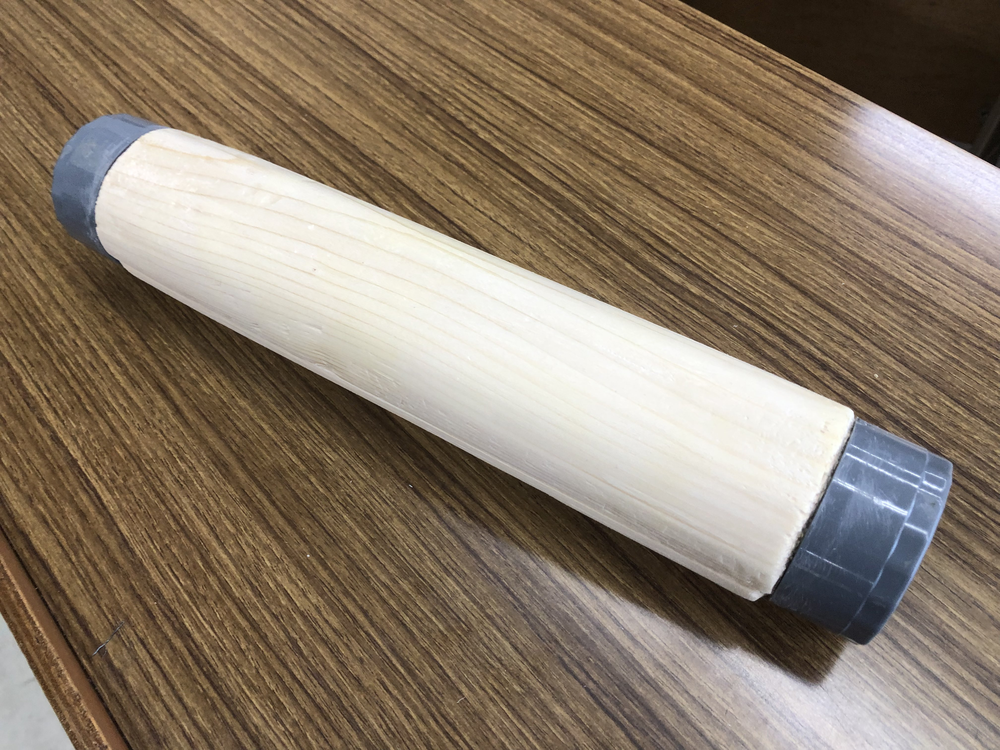
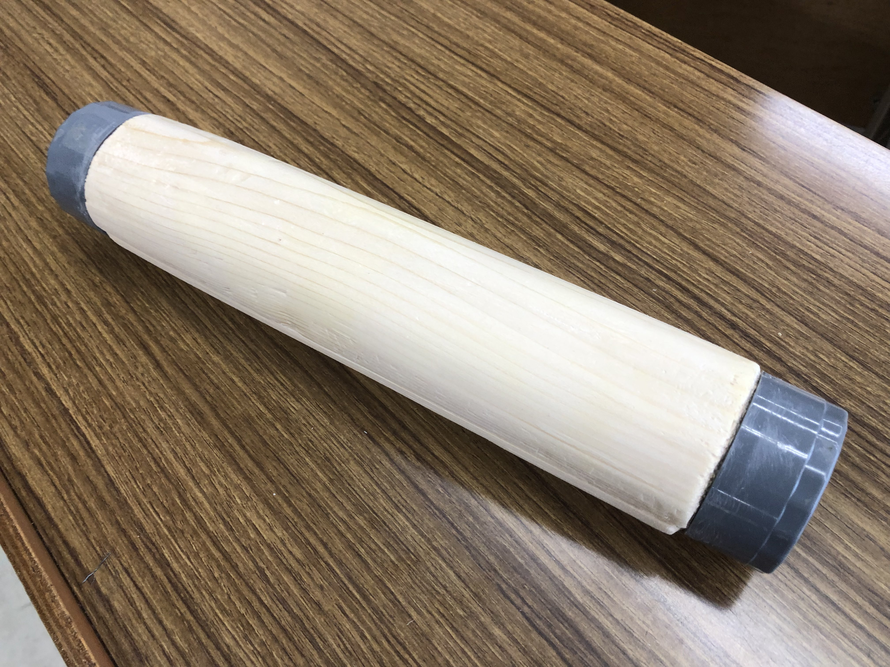

Welcome!! this is my Portfolio!!
大阪在住の19歳、高専4年生メカトロニクスコースに在籍、しがない高専生の成果物や活動がここに載っています。
信じるか信じないかはあなた次第...!!
成果物
高専1年生(2021年) 高専祭の水鉄砲製作
高専祭の出し物として水鉄砲を用いた射撃ゲームを計画し、製作班の一員として製作しました。
高専3年生(2023年) 高専祭のエアホッケー製作
高専祭の出し物として、A班のリーダーとして8名のチームメンバーと共にエアホッケーを製作しました。
木材やプラスチック板を活用し、約2か月間にわたり製作しました。空気を入れる構造は断念しましたが、表面を滑りやすく加工することで完成させました。
高専3年生(2023年) 特別研究で楽器の製作
特別研究として楽器のシェイカーを製作しました。 使用した材料は木材、プラスチックパイプのふた、植物の種です。
木材を削って円柱状にし、内部に植物の種を入れて音を出す楽器を作成しました。
 

基礎研究
ロボットアームの製作に会計・プログラム班として参加
基礎研究の授業で、ロボットアームの製作プロジェクトに参加。私は会計とプログラム班を担当しました。
プログラムではHTML、CSS、JavaScriptを活用し、タッチパネルとスロット形式のゲーム画面を制作しました。AIチャットやWebページを参考にしながら初心者なりに取り組みました。
スキル
これまでの経験や学びを活かし、以下のスキルを習得しました
- fusion 360（3D-CAD）
- Pythonプログラミング
- C言語
- 画像・動画編集
- ボール盤操作
プログラム系やボール盤操作などは主に学校の授業で学び、画像・動画編集はほとんど趣味でいじって習得しました。
以下の画像はVScode(プログラム)と画像・動画編集です。
部活動
現代音楽部
部活動では現代音楽部(軽音部)に入っていて、メンバーとともに年に何回かライブに出ています。
一応私の入っているバンドの公式あるので載せておきます。更新されるかは...分かりません。